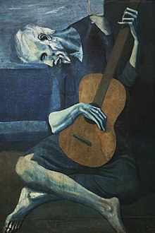

Hommage to Picasso
Who is Picasso?
Pablo Ruiz Picasso (25 October 1881 - 8 April 1973) was a Spanish painter, sculptor, printmaker, ceramicist and theatre designer who spent most of his adult life in France. One of the most influential artists of the 20th century, he is known for co-founding the Cubist movement.

Portrait of a lady with red beret in cubist style, 1939
The Blue Period
The Blue Period (Spanish: Período Azul) is a term used to define the works produced by Spanish painter Pablo Picasso between 1901 and 1904 when he painted essentially monochromatic paintings in shades of blue and blue-green, only occasionally warmed by other colors. These somber works, inspired by Spain and painted in Barcelona and Paris, are now some of his most popular works, although he had difficulty selling them at the time.

The Old Guitarists, 1903
Celeste - an example of Picasso moving into his Rose periodCeleste - an example of Picasso moving into his Rose period.